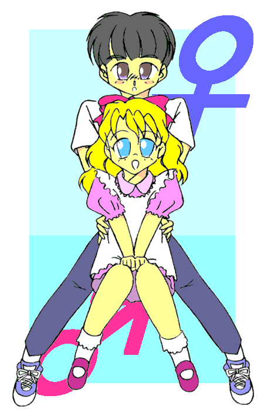

やわらかく降りつづく、６月の雨。
鏡のように滑らかな大村湾を見下ろして、一軒の洋風の家があった。
垣根はなく、敷地に盛り土をして、芝生を植えた上に建っている。
一階の窓は、大きく、開放的に切ってある。
家、なのだが、店も兼ねているようだ。
自転車が、一台走って来た。
青いレインコートを着た人影が、とん、と自転車をおりて、そのまま家の裏手に押していく。
自転車を止めて、すぐにこちらに戻って来た。
ドアの前に、木製の看板が出ている。
看板には 『喫茶 スナック ブルーコスモス』とあり、青い花の絵が描いてあった。
ついさっきまで少年・宇宙（そら）だった、少女・美空（みそら）は、ドアの前でちょっとためらった。
「お母さん、分かってくれるかな。」
青い瞳が、不安に揺れる。
帰り道、自転車をこぎながら、つらつら考えた。
母親に、「あなたの息子は娘になりました。」って、言うの？ 本当に？
でも。
隠したって、隠し通せるものじゃない。
自分から望んで変わったわけでもない。
これからどうすればいいのか、意見も聞いてみたい。
何度考えても、結論は 『言うしかない。 』
美空は、ドアを開けた。
店内では、３０歳ほどの外見の女性が、グラスを磨いていた。
黒い髪。 茶色の瞳。 黄色い肌。
美空と違い、標準的な日本人の容姿だ。
「ただいま。」
「おかえり、そら。」
母の治子は、手を止め、ドアの方を見て、違和感をおぼえた。
「あなた、どうしたの、その身長。」
すこし間の抜けた質問だが、無理もない。
普段はドアをかがむようにして入ってくる息子の頭上に、今日に限って空間ができている。
「うん。 あのね。 驚かないでね。」
美空は、レインコートを脱いだ。
美しい金髪が流れ出した。 薄暗い店内が、一気に明るくなったような気さえする。
治子の目を見て、言った。
「あたし、女の子になっちゃった。」
「おやまあ。 ………魔法かい？ また、派手なのにかかったねえ。」
治子は、ちょっと驚いた顔をしたが、平然としている。
怒鳴られるか、泣かれるか、と身構えていた美空のほうが、拍子抜けした。
「お母さん、あんまり驚かないんだね。」
「これでも、一応、魔法使いだからね。」
治子は、作業の手を止めて、美空に近づいた。
「まあ、ずいぶんと美人になって。 さすがは、エリックの子供ね。 面影があるよ。」
「お父さんに、似てるんだ？」
「ええ。 男の子だったときも、今もね。」
「それで、名前なんだけどね。」
美空はおもいきって切り出した。 この雰囲気なら、分かってもらえるかも。
「この姿で、そら、って、つらいんだ。 美空、って呼んでもらえないかしら。」
治子は、さっきよりも驚いた顔をした。 美空は、いそいで付け足す。
「友達に考えてもらったの。 そら、って名前は大好きだよ。 だけど、お願い。」
「そら、あなた………。」
治子は絶句した。
青い瞳に、決意と不安が見て取れる。 この子は、本気だ。
「その前に、確認しておきたいことがあるわ。」
口を開いたのは、治子だ。
「そらの記憶は、あるのね。」
美空は、うなずいた。
「美空ちゃんの記憶は、あるの？」
「ないわ。 あたしは、ついさっきまで、そら、だったもの。」
精神を乗っ取られたわけではないようだ。 治子は、すこし安堵した。
とはいえ、そうなると多重人格の疑いが濃くなるか？
「もうひとつ、大事なこと。 美空ちゃんは、わたしの娘になってくれるの？」
「お母さん、なに馬鹿げたことを。」
笑おうとして、美空は、母の真剣な表情に驚いた。
自分もまじめに言いなおす。
「もちろんよ。 あたしは、女に変わっただけで、お母さんの子供です。」
言いながら、美空のほうが不安になってきた。
「お母さん。 出て行けなんて言わないよね？」
「そんなことを言うわけ、ないでしょう。」
治子は微笑を浮かべた。
大丈夫。 この子は、間違いなく私の子だ。
「わかったわ。 美空、ね。 これからもよろしく。」
美空の表情が輝いた。
まあ、この子は、なんて明るく笑うのだろう。 雲間に光る青空のようだ。
「雨に濡れたのでしょ。 いつまでも立ってないで、早く着替えてきなさい。」
「はい。」
階段を上がりかけて、美空は振り向いた。
「お母さん、あの、胸がちょっと痛いんだけど、下着………。」
「ああ、そうか。 一緒に行くわ。」
「あのね、今日、友達が来るんだ。」
話しながら、並んで階段を上がっていく。
しばらく経って。
美月が『ブルーコスモス』にやって来た。
家から歩ける距離だが、ここへ来たのは初めてだ。
呼び鈴を押そうかと迷ったが、そのまま、そっとドアを開けた。
「こんにちは。」
「いらっしゃいませ。 あ、美月。」
カウンターの向こうで、美空が立ち上がった。 店番をしているらしい。
「ここに座って。 ミルクティーでも淹れるよ。」
美月は言われるままにカウンターに座って、あ、と声を上げた。
「スカート、はいてるんだ。」
向こうを向いた美空は、白のブラウス、グレーのスカートの上に、エプロンを着けていた。
どうということのないシンプルな服だが、美空が着ると、ずいぶんかわいく見える。
高くて細く締まった腰のラインが、美しい。
「もしかして、おかしい？」
背中を気にする美空に、美月は言った。
「すごくかわいい。 嫉妬しちゃうくらい。」
「お待たせいたしました。」
カウンターにミルクティーが２つ並んで、美空は美月の向かいに腰をかけた。
「で、専門家の話は聞けたの？」
「美月にも、一緒に聞いて欲しいって。 いま、買い物よ。 そろそろ帰ってくると思うわ。」
「え？ 専門家って、もしかして？」
「ん。 あたしのお母さん。」
タイミング良くドアが開いて、治子が入ってきた。 雨だというのに、袋をたくさん抱えている。
「おかえりなさい。 さっき話した美月よ。」
「お邪魔してます。 美月です。」
「いらっしゃい。 制服を貸してだなんて、無理をお願いしてごめんね。」
「いえ。 あの、こんな時ですし。」
「さて、役者もそろったことだし、話そうかね。 おとぎばなし。
美月ちゃんにも聞いてもらいたいの。」
３人はテーブル席に移り、治子は話し始めた。
「まず、始めに。
美空にかかった魔法を解くことは、わたしにはできないわ。
魔法は、基本的にはかけた本人にしか、解けないの。
しかも、同種の魔法の上書きもできなくなる、厄介なものなのよ。
魔法を解くための魔法、というのも、存在するんだけれどね。
この日本で、魔法にはめったにお目にかからない。
それに見つけたって、入手できるか、習得できるか分からない。
私のほうでも探してみるけど、見込みは薄いんじゃないかな。 それよりも。」
治子は、ちょっと間をあけた。
「かけられたのは、姿を変える魔法で、術者の力ではなく、道具を利用した魔法。
道具の入手には、それなりに手間も時間も、費用もかかる。 日本では、特にね。
しかも、先に美月ちゃんが触ったにも関らず、そらを狙って発動している。
わかる？
だれかが、何かの目的で、そらを、美空にしたのよ。」
「そっか。 わかったわ。」
美空が声をあげて、手を打った。
「なら、その人は、近いうちにあたしに接触してくる。」
「よくできました。 その通り。」
治子は、笑った。
「そこを狙って、捕まえて、もとに戻るのね。」
「ま、相手が論理的な思考をしていなければ、推察では捕まえられないけどね。
気をつけておく価値はあると思うわ。」
「それと。 もう一つ、たいへんな話があるのよ。」
治子は、話を切って、コーヒーに口をつけた。
苦味の混じった甘い香りが、テーブルに揺れた。
「美空、ペンダントはしてるわね？」
「うん。 してるよ。」
美空は、胸元から、銀色の小さなペンダントを出した。
六角のフレームに内接する、三日月のデザイン。
幼い頃からお守り代わりに着けている、父の、形見だ。
「美空。 美月ちゃん。 このペンダントはね。」
語る治子の胸元にも、まったく同じものがあるのに、美月は気づいた。
「魔法の、ペンダントなの。」
「………はい？」
さすがの美空も、もちろん美月も。
あまりに唐突な治子の言葉に対応できていない。
「これは、魔法のペンダントなの。」
治子は繰り返した。
「このペンダントで出来ることは、２つ。
まずひとつ、受けた魔法を自分の魔法として取り込む。
それから２つ目、取り込んだ魔法を、持ち主の求めに応じて発動させる。」
「………どうして、そんなものをお母さんが持ってるのよ。」
「美空のおばあちゃん、つまり、私の夫の母から譲り受けたのよ。
ある魔法と一緒にね。
ただし、このペンダントの魔法は、女のためのものなの。
昔話でも、圧倒的に『魔女』の話が多いでしょう。
男だと、まず使いこなせないらしいわ。
だから、そらには魔法は継がせないつもりだったんだけど。」
治子は、美空に向き直った。
「あなたは、関ってしまった。
正確な知識も無く、力を使うほど危険なことはないわ。
美空。 魔法を、継いでくれるかしら。」
「継ぐ、って、どういうことよ。」
「簡単に言うと、ね。」
そっと笑って、言った。
「魔法少女。 やってみる気は、ある？」
それまで、きょとん、としていた美空の青い瞳が、輝いた。
「魔法少女、って、あの魔法少女？」
「どの魔法少女だか知らないけど、多分、その魔法少女よ。
１７歳だとちょっとトウが立ちすぎてる、なんていう人もいるけどね。」
「やるっ！ やるやる！ やらせて！」
「ちょっと、美空。 そんな簡単に決めちゃっていいの？」
心配そうに美月が聞いたが、美空はもうすっかりその気である。
「いーのっ！ やるの！ お母さん、教えて！ ね？」
治子は、うなずいた。
「私の知っている魔法は、ひとつだけ。 外見年齢を操作する、魔法。」
「………お母さん、もしかしてすごく若く見えるのって。」
「Shut Up！ 余計なことは言わなくていいの。」
穏やかな表情ながら、厳しい目つきで美空を封じて、治子は続けた。
「もしも。 あなたが１７歳じゃなくて、７歳だったら、どんな姿だと思う？」
「え？ そんなの分かんないよ。 見たことないし。」
「想像するのよ。 そうね、美月ちゃんはどう思う？」
美月は、美空を見なおした。 金の髪、青い瞳、白い腕。
「そうですね。 フランス人形みたいな、ちょっとぽっちゃりした子だと思います。」
「だそうよ、美空。 そんな自分を想像してみて。」
「ん。」 目を閉じる美空。
美空の胸の前に、治子は両手をかざした。
まっすぐ立って、力を、込める。
「はるかに伝わりし魔の力よ。 わが命に従い、その力を示せ。」
低く、だがはっきりとつぶやいた。
ぶん、と、手に青い光が灯る。
共鳴するように、美空のからだにも光がまとわりつく。
「え。」
美空が、閉じていた目を、開けた。
椅子の中で、美空の座高が、みるみる低くなっていく。
服を押し上げていた胸は、もうわからない。
美空は声も出ずに、自分の手足がぐんぐん縮んで行くのを、呆然と眺めている。
そして、あっという間に。
美空は、金の髪の、７歳くらいに見える幼い女の子になってしまった。
だぶだぶの服に埋まり、白いもみじのような手を広げて、大きく開けた青い瞳で見つめている。
「一度かかったから、美空は、これで年齢操作の魔法を覚えた、ってことなの。
話の続きの前に、これに着替えていらっしゃい。」
治子は、買ってきたばかりの袋をひとつ、美空の胸に抱かせた。
「おかーさん、最初っから、あたしを子供にするつもりだったのね？」
美空の発音が子供っぽい。 ちょっと、舌の長さが足りないらしい。
「お母さんだって、昔、やられたんだから。 おあいこ。」
「あたし、やられるばっかりで、おあいこじゃないよー。」
「あなたも自分の娘にしてやりなさい。」
べーっ、と舌を出して、美空は２階へ上がって行った。
「めちゃくちゃ、かわいいかも。」
美月は、ハートマークの目で見送った。
「いつか、こんな日が来るんじゃないかと、予感はしてたのよ。」
美空がいなくなると、治子は美月に言った。
「そらは、昔から女の子のすることに興味があってね。
ゲームをしても、女の子が主人公のことは多かったし。
もしかしたら、ペンダントの意思、なんていうものも働いているのかもね。
それとも、単に時の流れの気まぐれなのかもしれないけれど。」
美月にも、思い当たるところがある。
そういえば、今日も学校のモニタでは、ツインテールの女の子が先頭で走っていた。
「こんなことに巻き込んじゃって、ごめんなさいね。
でも、事情を話せる友達がいるのは、あの子にはとっても大切なこと。
あなたが最初の変身を見て、ここまで来て、話を聞いてくれて、どれだけ心強いか。
本当に、ありがとうね。」
治子の言葉に、美月はうなずいた。
「私でよければ、力になります。 そら君に、戻れるといいですね。」
とっとっとっ。
軽い足音とともに、７歳の美空が降りてきた。
ピンクと白のエプロンドレスを着ている。
「かっわいー！」
美月が声を上げて、駆け寄った。
「うー。 あんまり、うれしくないかも。」
「なに言ってるのよ美空。 ちょー美少女よ！」
美月は、美空を抱き上げて、すりすりした。
見た目だけではなく、体重なんかも見た目なりになっているらしい。
「もー柔らかい！ 軽くてふわふわ！」
「お、おかーさん。 それより、続き。」
「じゃあ、美月お姉さんの膝の上で、一緒に聞こうね。」
「うー、みつきって、結構かわいいもの好きだったんだ………。」
「さて、続きね。」
美空が美月の膝に納まるのを待って、治子は話し始めた。
「魔法の発動の仕方について。
レベルの低い間は、対象の望まない魔法はかからない。
対象の意思と、魔法の意思が一致したとき、始めて魔法は形になるの。」
「さっき美空に変身後をイメージさせたのは、それでなんですね。」
美月の言葉に、治子はうなずいた。
「それができれば、あとは簡単。
ペンダントに気を集めて、手のひらから解き放つイメージ。
呪文はあってもなくてもいいけど、ひとつ決めておくと、集中しやすい。 それだけよ。」
「じゃあ呪文は、シャランラでもマハールターマラでも、なんでもいいのね。」 と、美空。
「また古いことを。 ピピルマピピルマでもパステルポップルでも、なんでもいいわよ。」
「あの、一個も分かんないんですけど。」
「最新のでも、美月ちゃんの生まれる前の呪文だからね。 気にしなくて良いわよ。」
（作者注。 リメイクと再放送を除いております。）
「では、実戦。 美月ちゃん、ご協力いただけるかしら。」
「わ、私ですか？」
「大丈夫、痛くないから。」
「いや、ちょっと、心の準備が。 わたし、美空ほどかわいくないし。 いや、関係ないけど。」
美空は両手を胸の前でにぎりしめ、じっと美月の目を見つめた。
「みつき、だめなの？」
「うわぁ美空、その姿でウルウルするのは反則だよ。」
美少女の『お願いポーズ』には、かわいいもの好きでなくとも、抗うことなどできない。
「わかったわよ、一回だけね？」
美月の言葉にうれしそうにうなずいて、美空は宣告した。
「じゃあ、みつきは、１４歳の優しいお兄さん！ 年齢そのままだと、服が破けちゃいそーだから。」
「ふぇ？」
美月は妙な声を出した。
「私、女よ、いちおう。」
「おかーさん。 さっきの説明だと、あたしは今、性転換と、年齢操作と、両方使えるのよね。」
そうか。 美空は今日、学校で光を浴びたとき、性転換の魔法を覚えてしまったんだ。
美月は、やっとそこに思い到った。
関ってしまった、って、そういうことね。
え、ちょっと待って。
「………美空、魔法で性別を変えられるなら、もとに戻れるんじゃないの。」
「それができれば、話は簡単なんだけれどもねえ。」
治子が口をはさんだ。
「さっきもちょっとだけ触れたけど、同種の魔法の上書きは出来ないの。
性転換に、性転換を別の人間が重ねることはできない。
年齢操作に年齢操作を上書きして、さらに姿を変えることはできない。
そういう仕組みになってるのよね。」
「だから、実験台はみつきしかいないんだよね。 お母さんは年齢を………」
「美空？」
「う。 と、とにかく、みつき、協力してくれるんだよね？」
あどけなく笑って、美空は、美月の胸の前に、ちいさな手をかざした。
「さ、みつき。 変身後の姿を、想像して。」
自分が承知したことだ、しょうがない。
美月は、うなずいて目を閉じた。
もしも、私が男の子だったら。
髪は短くて、痩せ型で、背は、中２だったら今より少し低いかな。
肩幅があって、色は白いほうで、瞳は今と同じ栗色で･･･。
「バルス！」
美空の声が響いた。
青い光が美空の手にともり、美月のからだを包み込む。
からだがとろけるような、不思議な感覚。
肩のあたりで、骨がゆっくり動いていくのが分かる。
それから、下半身が中からかき回されるような、どろっ、とした感じ。
「やったね！」
美空は手をたたいて跳ねた。 大成功！
美月は、そっと、髪に手をやった。
手に、硬く短い髪の先が触れた。 記憶にまったくない感触だ。
おそるおそる目を開けて、自分のからだを見下ろす。
平らで広い胸。 そして、股間の膨らみの感触。
「やだ。 本当に。」
低い自分の声に驚いてのどに手をやり、張り出したのどぼとけに愕然とする。
「お兄ちゃん。 かっこいー。」
美空が飛びついてきた。 あわてて抱きとめる。
軽い。 さっきよりずいぶん軽く感じる。
「美空、ちょっと。」
いいながら美月は、美空のからだの柔らかさと、ふわっとした香りにドキドキしていた。
なに、この感じ。
股間に血が集まる。 膨らむ？
「やだ。 おにーちゃん。 ふくらんでる。」
美空は、めざとくそれを見つけた。
美月の顔を見上げて、にっこり笑って、言った。
「しごいてあげよっか？」

□ 感想はこちらに □